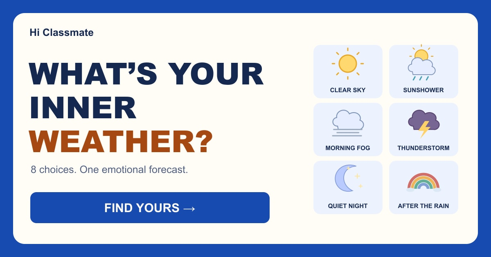

What does your emotional sky look like?
What’s Your Inner Weather?
Some feelings arrive
like sunshine.
Others build like a storm.
What’s happening inside you?
YOUR INNER WEATHER IS...
Share or play again ↓Deep Dive
Chemistry

Another side of you?
About What’s Your Inner Weather?
What’s Your Inner Weather? is a personality quiz that uses weather as a playful metaphor for the way people experience, express and recover from emotions.
Instead of asking you to describe your personality directly, the quiz presents eight everyday situations involving difficult days, conversations, disappointment, excitement, stress and recovery. Your choices are combined to find the weather pattern that most closely matches the way you tend to process those moments.
The six possible results are Clear Sky, Sunshower, Morning Fog, Thunderstorm, Quiet Night and After the Rain. Each result describes a different emotional style and includes a deeper look at what other people may notice, what may be happening internally, a possible strength, a blind spot and the kind of situation that may help you reset.
This is an entertainment personality test, not a psychological assessment or mental-health evaluation. The result is based only on the choices you make inside the game.
How to Play
Read each of the eight situations and choose the response that feels closest to what you would naturally do.
There are no right or wrong answers. Different choices contribute to different weather patterns, and your overall answer pattern determines your final Inner Weather result.
At the end, you can explore your result in more detail, compare its strengths and blind spots, see which other weather style may feel naturally compatible, and share your result with friends.
What Does Your Inner Weather Mean?
Weather changes, and people do too. Your result is not meant to place you into a permanent personality box.
The weather metaphor is simply a fun way to describe different patterns of emotional expression and recovery. Someone may relate strongly to one result today and recognize parts of another result in a different situation.
Compare your result with your friends and see whether they expected your forecast—or whether they think your emotional weather looks completely different from the outside.